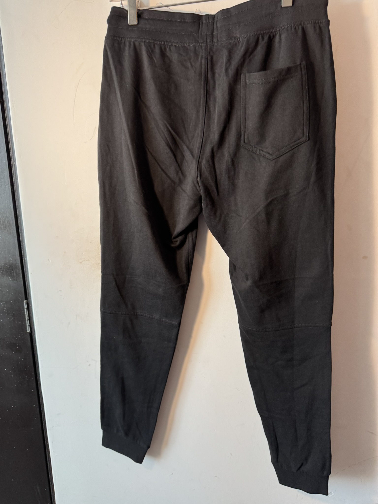
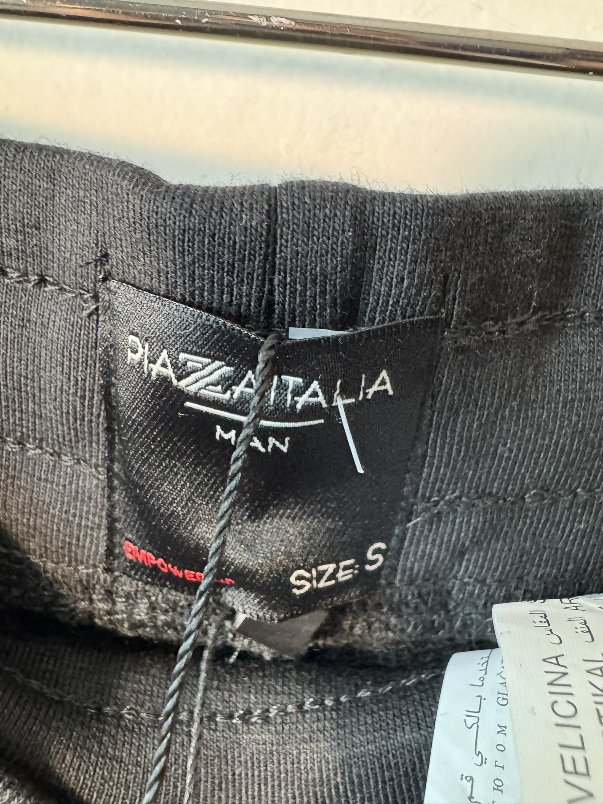
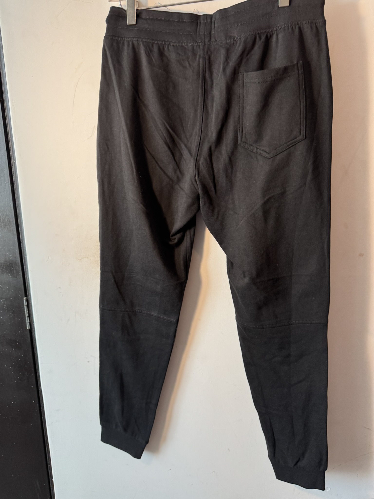
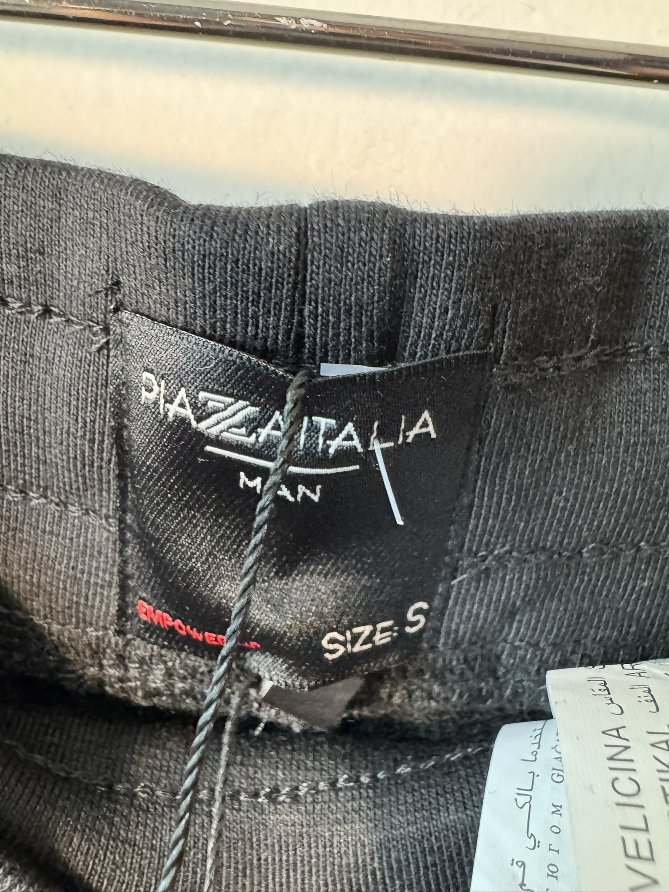

$250.00 MXN
Descripción
Pantalones deportivos tipo jogger en color negro, diseño técnico con múltiples bolsillos de cierre metálico, cintura elástica y puños ajustados para un look urbano y funcional.
Marca
Piaza Italia
Tallas Disponibles
S
Comprar por WhatsApp 💬